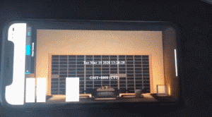
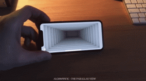

一种基于视觉误差产生的裸眼3D
与传统的双眼产生的不同的图像差形成距离感不同.
这种裸眼是依赖3D的“离轴投影”，离轴投影将产生“非对称相机”视锥体。
实际做法只要在投影矩阵计算的时候，输入指定区域的视锥参数即可。
.了解投影矩阵的前提下，视锥移轴并没有新的算法，仅仅参数不同，但是这个思维转换在这过程中却是很重要的一环。
这种裸眼3D实际上是基于一种视觉误差产生的，与传统的双眼产生的不同的图像
形成距离感不同，这种裸眼是依赖3D的“离轴投影”，离轴投影将产生“非对称相机”视锥体。
不过离轴投影与非对称相机并不是已有的专业名词，这是TheParallaxView作者提出的一个概念。

视频中，作者利用ARkit的faceid功能，定位到眼睛的位置，然后将裸眼3D的相机位置替代到人眼球位置。
除去ARkit的功能，这个效果的核心技术在其实现的“非对称的镜头”上。

当然，这种裸眼3D效果，一般情况下肯定是需要搭配陀螺仪进行使用.

手机扫描下方二维码，体验效果.